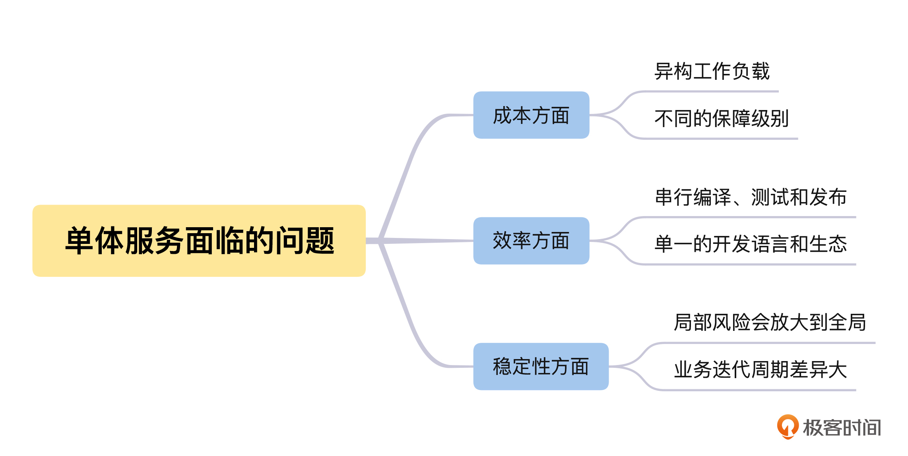
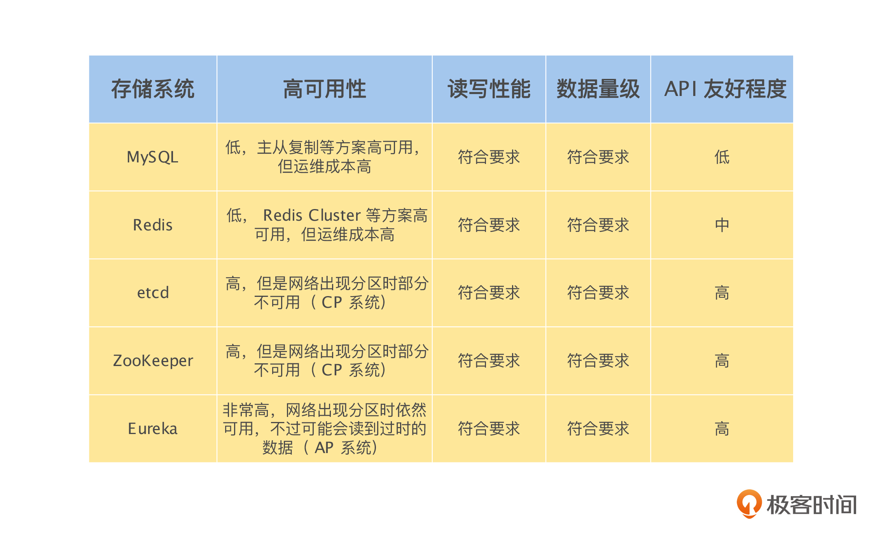
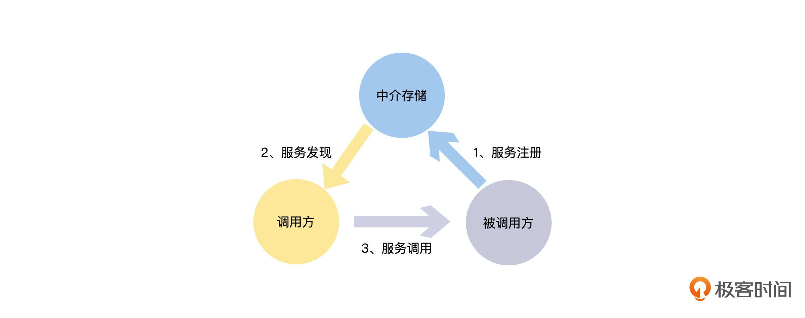
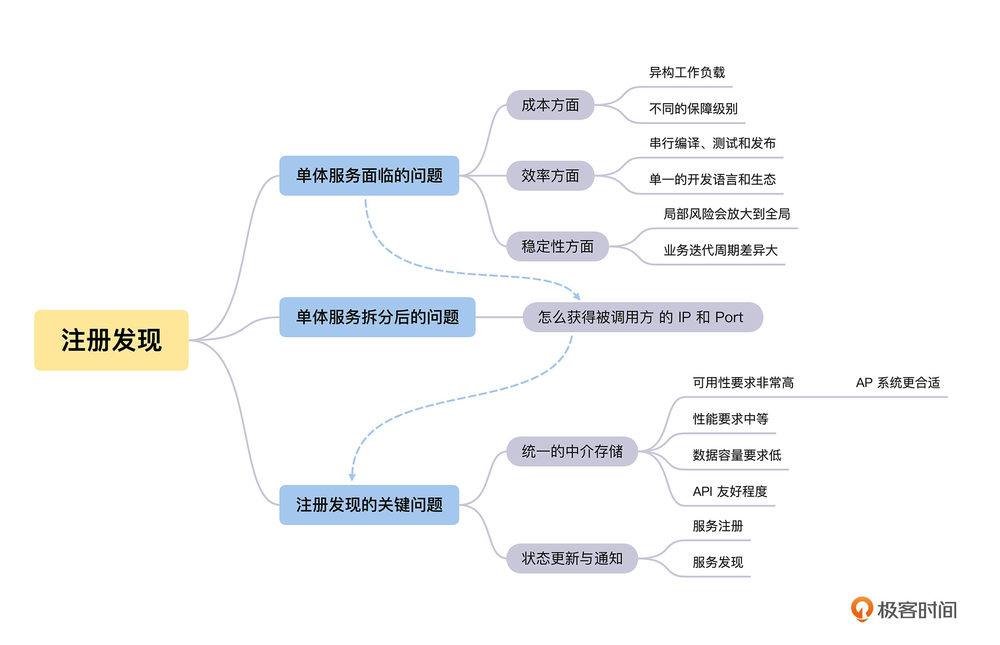

- 00 开篇词 掌握好学习路径，分布式系统原来如此简单.md.html
- 01 导读：以前因后果为脉络，串起网状知识体系.md.html
- 02 新的挑战：分布式系统是银弹吗？我看未必！.md.html
- 03 CAP 理论：分布式场景下我们真的只能三选二吗？.md.html
- 04 注册发现： AP 系统和 CP 系统哪个更合适？.md.html
- 05 负载均衡：从状态的角度重新思考负载均衡.md.html
- 06 配置中心：如何确保配置的强一致性呢？.md.html
- 07 分布式锁：所有的分布式锁都是错误的？.md.html
- 08 重试幂等：让程序 Exactly-once 很难吗？.md.html
- 09 雪崩（一）：熔断，让故障自适应地恢复.md.html
- 10 雪崩（二）：限流，抛弃超过设计容量的请求.md.html
- 11 雪崩（三）：降级，无奈的丢车保帅之举.md.html
- 12 雪崩（四）：扩容，没有用钱解决不了的问题.md.html
- 13 可观测性（一）：如何监控一个复杂的分布式系统？.md.html
- 14 可观测性（二）：如何设计一个高效的告警系统？.md.html
- 15 故障（一）：预案管理竟然能让被动故障自动恢复？.md.html
- 16 故障（二）：变更管理，解决主动故障的高效思维方式.md.html
- 17 分片（一）：如何选择最适合的水平分片方式？.md.html
- 18 分片（二）：垂直分片和混合分片的 trade-off.md.html
- 19 复制（一）：主从复制从副本的数据可以读吗？.md.html
- 20 复制（二）：多主复制的多主副本同时修改了怎么办？.md.html
- 21 复制（三）：最早的数据复制方式竟然是无主复制？.md.html
- 22 事务（一）：一致性，事务的集大成者.md.html
- 23 事务（二）：原子性，对应用层提供的完美抽象.md.html
- 24 事务（三）：隔离性，正确与性能之间权衡的艺术.md.html
- 25 事务（四）：持久性，吃一碗粉就付一碗粉的钱.md.html
- 26 一致性与共识（一）：数据一致性都有哪些级别？.md.html
- 27 一致性与共识（二）：它们是鸡生蛋还是蛋生鸡？.md.html
- 28 一致性与共识（三）：共识与事务之间道不明的关系.md.html
- 29 分布式计算技术的发展史：从单进程服务到 Service Mesh.md.html
- 30 分布式存储技术的发展史：从 ACID 到 NewSQL.md.html
- 春节加餐 技术债如房贷，是否借贷怎样取舍？.md.html
- 春节加餐 深入聊一聊计算机系统的时间.md.html
- 春节加餐 系统性思维，高效学习和工作的利器.md.html
- 结束语 在分布式技术的大潮流中自由冲浪吧！.md.html
- 捐赠
04 注册发现： AP 系统和 CP 系统哪个更合适？
你好，我是陈现麟。
在前面的“概述篇”里，我们介绍了分布式技术的来龙去脉，以及在构建一个分布式系统的时候，我们会面临的相关挑战。从这节课开始，我们将一起进入到“分布式技术篇”的学习当中。
在这个专栏里，我们会聚焦日常工作中接触最频繁的分布式在线业务技术。学完这部分内容，相信你会对分布式计算技术心中有数，同时不会迷失于实现的细节中。
当然，分布式计算是个非常大的技术体系，包括 MapReduce 之类的分布式批处理技术，Flink 之类的分布式流计算技术和 Istio 之类的分布式在线业务技术。但是万变不离其宗，我们掌握了分布式计算技术中稳定不变的知识、原理和解决问题的思路，再研究这些技术的时候也会一通百通。
如果直接讨论技术知识和原理，可能会让你觉得非常枯燥和抽象。通过具体的场景案例来讨论技术是非常好的方式，所以我给你虚构了后面这个场景。
假设你是极客时间的一个研发工程师，负责极客时间 App 的后端开发工作。目前极客时间采用的是单体架构，服务端所有的功能、模块都耦合在一个服务里。由于现在用户数据和流量都在快速增长，经常会因为一次小的发布，导致全站都不可用，所以在白天的时候，你都不敢发布服务。
等到时间一长，凌晨流量低峰时的运维慢慢变成常态，你经常收到机器 CPU、内存的报警，但是每一次都很难知道是什么业务功能导致的，只能直接升级机器配置。慢慢的，你发现工作中的问题和挑战越来越多，但是不知道怎么处理。
你是不是也在面临这样的困境呢？我要告诉你的是别担心，在接下来的课程中，我们将会通过分布式技术来一一解决这些问题。
为什么需要服务注册发现
其实极客时间服务器采用的单体架构，在业务早期的快速迭代中，发挥了非常重要的作用。但随着用户数量和流量的快速上涨，这个单体架构就遇到了成本、效率和稳定性的问题。- 
单体服务面临的问题
首先是成本方面。我们在做所有的事情时都会考虑投入产出比（ROI），所以成本是我们必须考虑的一个问题。对于单体服务在服务器硬件方面的成本，我们需要特别注意异构工作负载和不同保障级别这两个方面的问题。
我们先来看异构工作负载方面的问题。单体服务会包含多种多样的功能模块，有一些是 IO 密集型的模块，比如主要对数据库进行 CRUD 的功能模块；另一些则是计算密集型的模块，比如图片、音频和视频转码相关的功能模块。如果能将 IO 密集型和 CPU 密集型的模块拆分成不同的服务，分开部署到更合适的硬件上，将可以节省大量的机器成本。比如 IO 密集型的模块，我们可以部署在 CPU 性能相对较低的机器上。
另一个问题是不同的保障级别。不同业务等级的保障级别也是不一样的：对于账号模块等核心模块，必须确保资源充足；但是对于非核心模块，保障的资源可以相对少一些。而对于一个单体服务来说，是没有办法对不同的模块实施不同的保障级别的。
其次，研发效率是我们能够高效、舒心工作的基本保障，所以必须要注意单体服务模式导致的串行的编译、测试和发布，以及研发团队只能选择单一的研发语言和生态（一般在进程内跨语言都会有限制）这两个限制。
串行的编译、测试和发布很好理解：多个研发团队会同时开发不同的功能，由于是单体服务，这些功能只能一起编译、测试和发布，非常浪费时间。如果还要进行灰度发布，那么效率将会更低。
另外还有单一的语言和生态限制。要知道，不同的业务需求可能会对应不同的编程语言和生态。如果是单体服务，则很难按业务需求来选择编程语言和相关的生态，这会大大影响研发效率。
最后，我们来讨论一下单体服务引发的稳定性问题。
一来局部风险会放大到全局，因为整个单体服务会包括非常多的功能，一个局部非核心功能的崩溃、死锁等各种异常情况，都会影响所有的业务。这样的风险非常大，而且我们没有办法将故障隔离开。
二来业务迭代周期差异大，一般来说，越底层核心的功能，需求就越稳定，因为它的迭代周期会比较长，比如 4 周迭代一次；而越上层的业务功能，需求变更就越频繁，因为它的迭代周期会比较短，比如 1 周迭代一次。由于单体服务不能分开发布，所以在业务功能迭代的时候，底层核心功能也必须频繁地发布，这对于稳定性来说是一个考验。
经过仔细分析，我们会发现上面三个方面的本质问题，都是因为我们的业务是一个单体应用，不能按资源类型进行分别扩容，不能按功能或者服务进行小范围的部署，也不能按业务的需求来选择更适合的研发语言和生态等，所以我们决定按资源和业务等维度对单体服务进行拆分。
服务注册发现的业务场景
这个时候，我们会遇到一个新的问题：之前所有的功能都在一个服务里面，不同模块和功能之间直接通过本地函数进行调用，拆分为多个服务后，怎么调用其他服务的函数呢？
你肯定能很快想到，通过 REST API 或者 RPC 来进行跨服务的调用。的确，这是个非常好的办法，但是通过 REST API 或者 RPC 都需要知道被调用服务的 IP 和 Port。所以，我们还需要解决一个问题：如果服务 A 需要调用服务 B，那么服务 A 怎么获取被调用服务 B 的 IP 和 Port 呢？这个其实就是服务注册发现的业务场景。
服务注册发现的关键问题是什么
我们先一起来讨论一下可以尝试哪些可行的方式。
首先，最容易想到的方式是配置 IP 和 Port 列表，即直接在服务 A 的配置文件中配置服务 B 的 IP 和 Port，如果服务 B 有多个实例，那么就配置一个列表。
这样的确解决了问题，但是如果服务 C、D、E 等非常多的服务，都需要调用服务 B，那么这些服务都需要维护服务 B 的 IP 和 Port 列表。每一次当服务 B 增加、删除一个实例，或者一个实例的 IP 和 Port 发生改变时，所有调用服务 B 的服务都需要更新配置，这是一个非常繁杂并且容易出错的工作，那么怎么避免这个问题呢？
其实，我们可以将配置 IP 和 Port 列表的方式修改为配置域名和 Port，即在服务 A 的配置文件中不再配置服务 B 的 IP 和 Port 列表，而是配置服务 B 的域名和 Port。这样可以通过域名解析获得所有服务 B 的 IP 列表，让所有的服务 B 都监听同一个 Port。
当服务 B 的实例有变更，不论有多少个服务调用服务 B，只需要修改服务 B 的域名解析就行了，这样就解决了配置分散到各个调用服务，导致配置一致性的问题。
但是如果服务 B 的某个实例出现了崩溃、网络不通等情况时，服务 A 在对服务 B 的域名做 DNS 解析时，会因为我们不能实时感知服务实例的状态变更，依然获得该实例的 IP，从而导致访问错误。
这里我们举一个租房中介的例子来说明一下。假设每一个要租 A 小区房子的人，都需要亲自去 A 小区获得租房的信息，同样，如果还想租 B 小区的房子，也需要亲自去 B 小区获得租房的信息，这是一个非常麻烦的事情。而更麻烦的是，一个小区的租房信息有变化了，之前获得信息的人都不会立刻知道，非常影响我们的租房效率和成功率。
这个时候，租房中介出现了，他每天去各个小区收集租房信息，我们需要租房的时候，直接联系中介就可以获得相关小区的租房信息，并且，中介会记录谁关心哪一个小区的租房信息。如果一个小区的租房信息有变化，中介会主动通知给关心这个小区的人，这样就让租房这件事情变得非常高效了。这里的租房中介，其实就是承担租房信息的注册和发现的功能。
所以，经过前面的讨论，我们可以得出服务注册发现需要解决的两个关键问题：
- 统一的中介存储：调用方在唯一的地方获得被调用服务的所有实例的信息。
- 状态更新与通知：服务实例的信息能够及时更新并且通知到服务调用方。
怎么实现服务注册发现
接下来我们就一起来讨论“统一的中介存储”和“状态更新与通知”这两个关键问题的解决办法。
如何选择适合的中介存储
“中介存储”这个问题，其实是我们在解决服务注册发现的时候，引入的一个中间层。“计算机科学领域的任何问题都可以通过增加一个间接的中间层来解决”，这一经典论断又一次被验证了。
我们需要找一个外部存储来做解决问题的中间层，但是基于服务注册发现的场景，我认为这个存储需要有以下几个特点：
- 可用性要求非常高：因为服务注册发现是整个分布式系统的基石，如果它出现问题，整个分布式系统将不可用。
- 性能要求中等：只要设计得当，整体的性能要求还是可控的，不过需要注意的是性能要求会随分布式系统的实例数量变多而提高。
- 数据容量要求低：因为主要是存储实例的 IP 和 Port 等元数据，单个实例存储的数据量非常小。
- API 友好程度：是否能很好支持服务注册发现场景的“发布/订阅”模式，将被调用服务实例的 IP 和 Port 信息同步给调用方。
基于上面对所需求存储系统特点的分析，我们一起来对常见的存储系统做一个系统性的比较：- - 通过上面的分析，我们可以看到，这些存储系统几乎都能用来作为服务发现的中介存储系统，但是基于整体考虑，MySQL 和 Redis 在高可用性和 API 友好程度上不满足要求，所以更合适的存储系统为 etcd、ZooKeeper 和Eureka。如果你希望在系统出现网络分区的时候，调用方一定不能获取过期的被调用服务实例信息，那么就选择 etcd 和 ZooKeeper，但是在被分区的部分网络中，可能出现因为不能获取被调用服务实例信息，而导致请求失败的情况。
如果你认为获取过期的实例信息，可能比完全不能获取被调用服务的实例信息要好，那么就选择 Eureka。毕竟大部分情况下，信息并没有过期，因为被调用服务的实例配置还没有发生变更，并且就算获得的信息过期了，也只是导致一次请求失败。
怎么做服务状态的更新与通知
对于“状态更新与通知”这个问题，我们可以将其分解为两个问题解决：- - 首先是服务的状态更新，即服务注册：如上图中的 1，服务的每一个实例每隔一段时间，比如 30 秒，主动向中介存储上报一次自己的 IP 和 Port 信息，同时告诉中介存储这一信息的有效期，比如 90 秒。这样如果实例一直存活，那么每隔 30 秒，它都会将自己的状态信息更新到中介存储。如果实例崩溃或者被 Kill 了，那么 90 秒后，中介存储就会自动将该实例的信息清除，避免了实例信息的不一致。所以这里的数据同步是最终一致性的。
然后是服务的状态通知，即服务发现：如上图中的 2，服务的调用方通过中介存储监听被调用服务的状态变更信息。这里可以采用“发布/订阅”模式，也可以采用轮询模式，比如每30秒去中介存储获取一次。所以这里的数据同步也是最终一致性的。
选择 AP 还是 CP
根据上面的讨论，从服务注册发现的场景来说，我认为Eureka 之类的 AP 系统更符合要求。因为服务发现是整个分布式系统的基石，所以可用性是最关键的设计目标。并且上面介绍的服务，在同步自己的状态到中介存储，以及调用方通过中介存储区获得服务的状态，这两个过程中的数据同步都是最终一致性的。既然服务注册发现系统整体是一个 AP 系统，那么将中介存储设计为 CP 系统，去放弃部分的可用性是不值得的。
到这里，服务注册发现的基本原理就介绍完了。当我们去研究各种各样服务发现的实现方式时，就会发现其实它们都是在解决“如何选择适合的中介存储”和“怎么做服务状态的更新与通知”的问题。当然由于服务发现是非常基础和重要的功能，所以其中的各种实现都是在高性能、高可用性的基础上解决上面的两个问题，做着各自的优化与权衡。
总结
到这里，我们一起完整地讨论了分布式系统中，一个非常关键的组件“服务注册发现”。我们一起来总结一下这节课的主要内容。- - 首先，我们一起讨论了为什么会对单体服务进行拆分，主要有成本、效率和稳定性三个维度的原因。
然后，在将单体服务拆分后，之前很方便的本地函数调用变成了跨实例或者跨机器的远程调用。这个时候，调用方需要知道被调用方的 IP 和 Port 等信息。
接着，我们发现 IP 和 Port 信息列表手动配置存在配置分散，无法统一管理的问题，在调用方变多之后，将会变得无法维护。域名 和 Port 信息的手动配置需要解决了配置统一管理的问题，但是如果实例出现突发的异常情况，将无法通知到调用方，导致故障。
最后，我们讨论了通过中介存储做服务发现的方式，其中最关键的是对于中介存储的选择问题。而且在服务发现的场景里面，高可用性是最应该去考虑的设计指标，所以选择 AP 系统做中介存储是一个不错的选择。
思考题
如果将整个互联网看成是一个非常庞大的分布式系统，那么这个分布式系统的服务注册发现系统是怎么实现的？它是一个 AP 系统还是一个 CP 系统？
欢迎你在留言区发表你的看法。如果这节课对你有帮助，也推荐你分享给更多的同事、朋友。
© 2019 - 2023 Liangliang Lee. Powered by gin and hexo-theme-book.